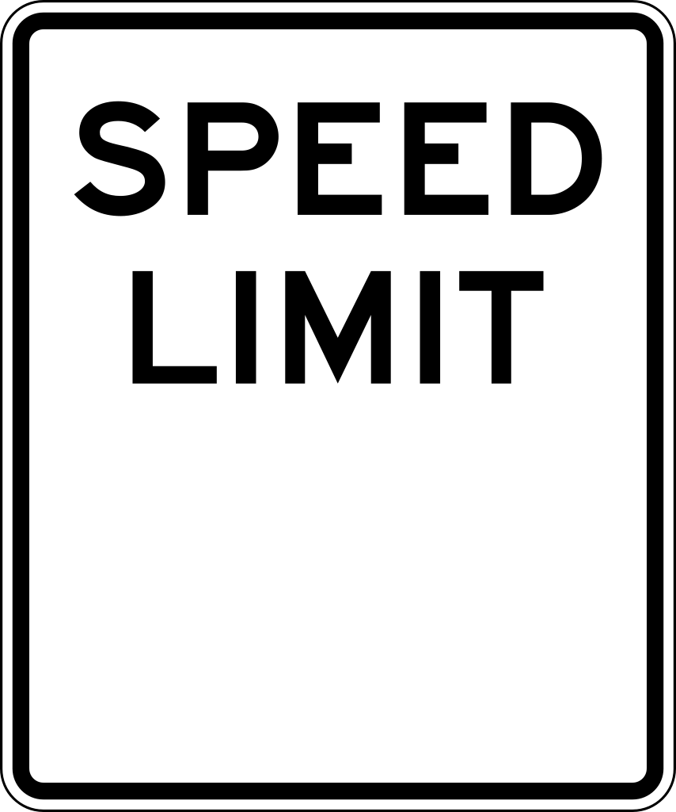
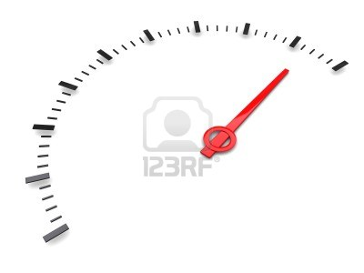

SpeedBreaker
Speed Information


Select Speed Tolerance
Disclaimer! This app is not responsible for any kind of speeding tickets or road accidents. Speedlimit does not reflect road work and school zones. Drive Safe!